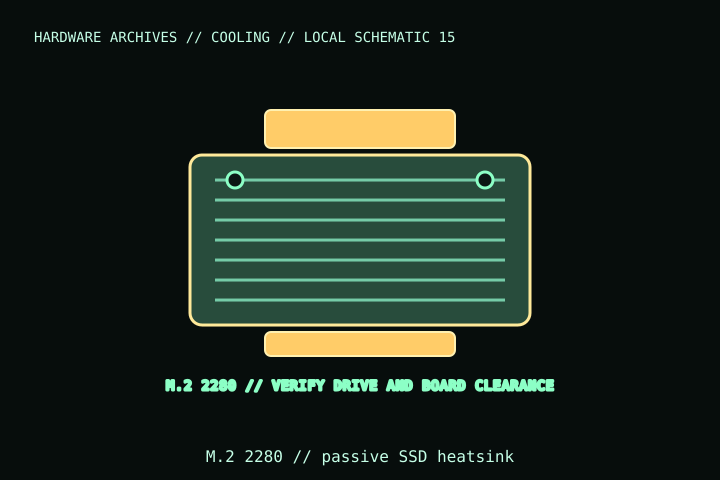

[ INDIVIDUAL COMPONENT // COOLING ]
ARCTIC M2 Pro
A passive aftermarket heatsink for M.2 2280 SSDs, article ACFAN00287A. It adds a thermal interface and physical height; it is not compatible with every motherboard’s captive SSD cover or double-sided drive arrangement.

IDENTIFICATION: Match the complete model name, suffix, article number, bundle, revision, and host manual to the physical label before installation. Similar product names and variants may use different wiring or dimensions.
Specifications
| Catalog subcategory | Thermal accessories |
|---|---|
| Exact model | ARCTIC M2 Pro; article ACFAN00287A |
| Envelope | 74 × 23 × 10.5 mm; designed for M.2 2280 drives |
| Thermal interface | Passive heatsink with included thermal pad(s); no fan, cable, or powered connector |
| Power / mounting | No electrical power; clamps/fasteners secure the cooler around the drive—use the included hardware. |
| Host / clearance | Check single/double-sided SSD component placement, motherboard M.2 cover, GPU/PCIe clearance, and enclosure height before fitment. |
Compatibility, installation & service
- Verify the SSD is M.2 2280 and check component height/side configuration against ARCTIC’s fit guide; do not force a clamp over NAND/controller parts.
- Remove a motherboard’s factory M.2 heat spreader only as instructed by the board maker; ensure the M2 Pro does not conflict with a captive cover or warranty requirement.
- The heatsink is passive and draws no power; confirm airflow and clearance in the actual M.2 slot location.
Service notes
Power down and remove the SSD per motherboard instructions before servicing. Replace contaminated or damaged thermal pads with the correct thickness; do not stack pads or overtighten the retention hardware.
Manufacturer references
- ARCTIC — M2 ProManufacturer product page for the M2 Pro model, M.2 2280 fit, and installation.
- ARCTIC — SupportManufacturer product support and installation guidance.
Verify fit, wiring, and ratings against the manufacturer document for the exact unit and host. This catalog record is an identification aid, not a compatibility guarantee.